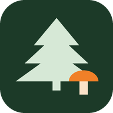

Lemmikuid veel pole. Ava kuusik ja vajuta südamele. Lemmikud ja märkmed jäävad ainult sinu telefoni.
Leide veel pole. Kui metsas seeni leiad, vajuta kaardil nupule „Leid“. Asukoht ja kuupäev salvestuvad sinu telefoni.
Leiud ja lemmikud on ainult selles telefonis. Varukoopia tasub aeg-ajalt teha, sest brauseri andmete kustutamine kustutab ka need.
Andmed: Keskkonnaagentuur, metsaregister (CC BY 4.0), seis . Aluskaart ja ortofoto: Maa- ja Ruumiamet. Näidatakse riigimetsa eraldisi, kus kuusk on enamuspuuliik. Vanus on arvutatud kuuse sünniaasta järgi. Raiete info tuleb metsateatistest; kõik raied ei pruugi registris kajastuda, seega vaata kohapeal üle.

Laen kuusikuid…